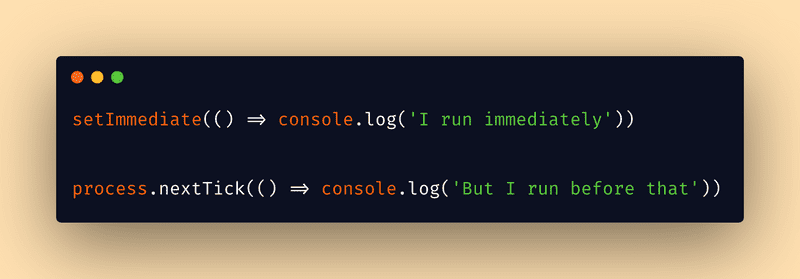

Home Work 10 : Node.js intro
Question 1:
Write the necessary Node script to make this code work for all arrays: [1,2,3,4,5,6,7,8].even(); // [2,4,6,8] [1,2,3,4,5,6,7,8].odd(); // [1,3,5,7] Test your code in Node.JS CLI
Question 2:
1. Explain why do we want sometimes to use setImmediate instead of using setTimeout?
Answer 1:
setImmediate() is to schedule the immediate execution of callback after I/O events callbacks and before setTimeout and setInterval . setTimeout() is to schedule execution of a one-time callback after delay milliseconds.
2. Explain the difference between process.nextTick and setImmediate?
Answer 2:
nextTick() is processed after every phase of the event loop and setImmediate() is only processed on the check handler phase of the event loop.

3. Does Node.js has window object?
Answer 3:
In the Node. js module system, each file is treated as a separate module. The Global objects are available in all modules. While in browsers, the global scope is the window object, in nodeJS, the global scope of a module is the module itself, so when you define a variable in the global scope of your Node.